Subsections
2. Creating a Schedule
The schedule is the central object you deal with in FrEAK, so it is necessary to explain it a little bit more in detail.
A schedule is the collection of all data that is needed to simulate one or several runs of your algorithm. It contains the algorithm you want to simulate with all its components and the preferences for the simulation itself.
2.1.2 What is a Batch?
The runs that are to be simulated consist of one or multiple batches. A batch is a collection of configurations for the phenotype search space, the fitness function, and the initial population. Furthermore, it contains the number of runs you want to simulate with these settings. A schedule will contain at least one batch with at least one run with the settings defined using the Schedule Editor but you are free to either increase the number of runs or to append new batches to your schedule.
It is important to realize that the modules of the schedule stay the same throughout all runs and batches and that a batch simply gets new configuration settings for these modules.
A batch consists of the following four components:
- the number of runs,
- configuration settings for the phenotype search space,
- configuration settings for the selected fitness function, and
- configuration settings for the initialization module that creates the initial population.
Most certainly, you now want to create your own schedule to see some algorithms in action, so let's begin right away.
First of all, select New from the File menu:
Figure 2.1:
Creating a new schedule.
|
 |
You will be presented the Schedule Editor.
Figure 2.2:
The Schedule Editor.
|
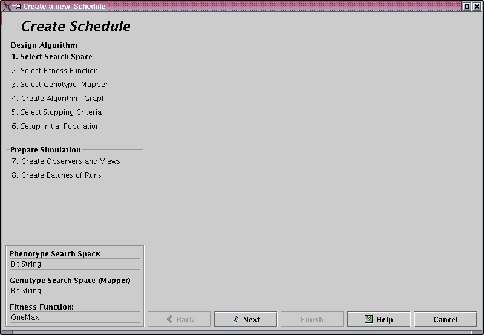 |
The dialog consists of three parts. At the bottom of the window, you find the navigation buttons Back and Next. Use them to navigate back and forth through the wizard. Press Help to get context-sensitive help and hit Finish to end editing the schedule and run it. At any time you can press Cancel if you changed your mind and discard all changes you made to the schedule.
The progress in the wizard is displayed on the left side of the window. The step you are working on is highlighted. In the lower left corner you can see the chosen search spaces and the fitness function.
The rest of the dialog will contain panels where you can construct your schedule step by step.
So let's take a quick tour through the Schedule Editor.
Before you start creating a schedule keep the following in mind:
- Whenever you can select a module from a list, there is most probably a Configure button near it. So whatever you choose, check the configuration of the module if it suits your needs. If there is a text field above the button that says ``Options", this field will contain the current configuration of the selection in a human readable format. For more information about configuring modules, see Section 2.6: configurationOfModules.
- Most modules you select from a list will show their description in a text area beside or below the list.
- The navigation buttons at the bottom are context sensitive. So, if Finish is enabled, your schedule is syntactically correct and you may run it. If, for example, the Next button is disabled, you forgot to select or configure something in the current step.
- Several modules of the schedule depend heavily on other modules. So, when you exchange a module for another one, e.g., if you change the phenotype search space, modules selected and configured in following steps may be removed from the schedule and might even not be available for selection any more.
2.4.1 Step 1: Select a Search Space
Figure 2.3:
Selecting a search space.
|
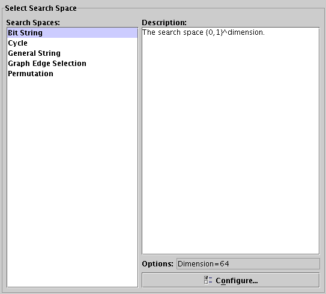 |
First, you need to choose a phenotype search space as a domain for the upcoming fitness function from the list (see Figure 2.3). BIT STRING is the default selection right now. If you want to change the search space, just click on another one and configure it using the Configure button.
For now, we are satisfied with BIT STRING with a dimension of 64. Press Next to continue.
Figure 2.4:
Selecting a fitness function.
|
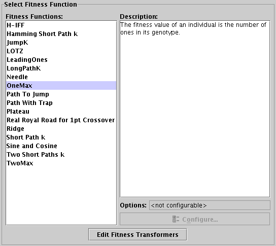 |
In the second step you need to choose the fitness function your algorithm is supposed to optimize.
Just like the search space you can choose it by selecting one from the list and configure it by pressing the Configure button (see Figure 2.4).
The Edit Fitness Transformers button is an advanced option to define fitness transformers that provide additional functionality to your fitness function.
Fitness transformers are applied to your fitness function and transform the computed values.
If you want to know how to use fitness transformers, read the next paragraph, otherwise
simply select RIDGE as fitness function and press Next to continue.
If you want to add fitness transformers to your schedule, click on Edit Fitness Transformers. You will be presented the following dialog:
Figure 2.5:
Defining fitness transformers
|
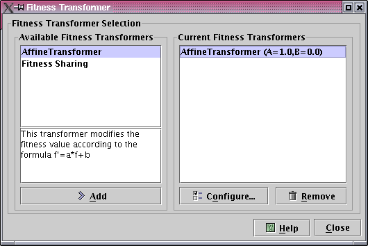 |
On the left side you can choose the fitness transformer you want to apply on your fitness function. Click on Add to use the selected transformer. The transformer will then appear in the list of your Current Fitness Transformers on the right. You can apply as many transformers as you want, they will be applied in the order specified by the list.
Of course, you can configure each transformer after adding it to the list of Current Fitness Transformers by clicking on the Configure button.
If you are satisfied with the fitness transformer setup, click on Close to get back to the schedule editor dialog. You will notice a small table containing information about your selected fitness transformers below the List of available fitness functions (see Figure 2.6).
Figure 2.6:
Setup of fitness transformers.
|
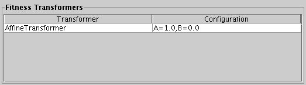 |
But let's get back to editing the schedule...
2.4.3 Step 3: Choosing a Genotype-Mapper
Some search spaces represent their individuals in a way that is inappropriate for the mutation and crossover modules you want to use or sometimes you just want to represent an individual differently from their original encoding. An obvious example is the use of the search space Graph Edge Selection. This search space works with an internal encoding of edge selections of a graph. Now imagine you want to represent graphs (spanning trees in this case) using a Prüfer number. You can either write a completely new search space and new mutation and crossover modules or you can map the individuals to a new search space, in this case to the search space General String using a Mapper. We call the the individuals that are created by the original search space Phenotypes and the individuals being produced by the mapper Genotypes. If you don't select any mapper, phenotypes and genotypes are obviously identical.
Figure 2.7:
Choosing a Genotype-Mapper.
|
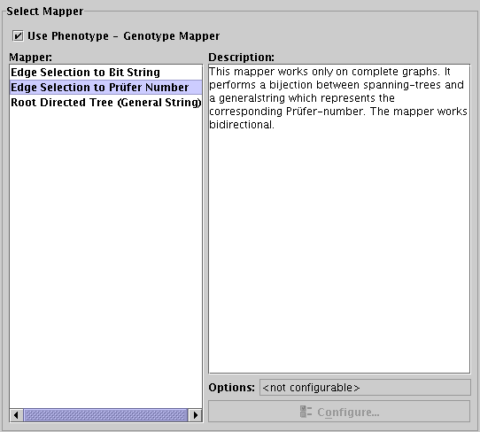 |
Before you can select a mapper you have to mark the checkbox Use Phenotype - Genotype Mapper. Then you can select one of the offered mappers from the listbox and configure it the same way you did it with the search space and the fitness function. That's all you have to do.
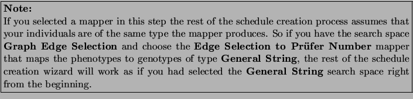
At the moment we don't need any mappers, so just click on Next to advance.
2.4.4 Step 4: Create an Algorithm Graph
Figure 2.8:
Creating an algorithm graph.
|
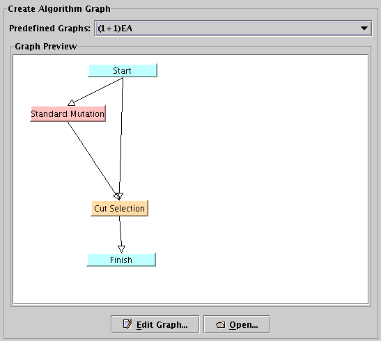 |
In this step you specify the algorithm graph which is the core of your algorithm.
For further explanations on algorithm graphs, read Section 1.2: section1.2 or Chapter 4: chapter4.
In the center of the window, you see a preview of the current algorithm graph. You can either choose a predefined graph from the drop-down list on top, or create your own graph by clicking the button Edit Graph.
For now we use the default graph. To see how to create custom graphs, see Chapter 4: chapter4.
Press Next.
2.4.5 Step 5: Select Stopping Criteria
Figure 2.9:
Selecting stopping criteria.
|
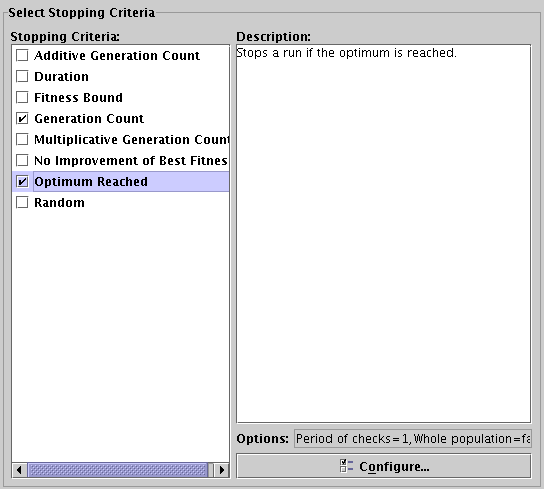 |
Stopping criteria tell the algorithm to stop the current run if a specified condition is fulfilled. Select one or more stopping criteria from the list of available stopping criteria (Figure 2.9). The check boxes will show you which stopping criteria have been selected. If you select multiple stopping criteria, the run is stopped if any of the criteria is fulfilled. In case no criterion is selected, you have to end the run manually by pressing the Skip Run button in the main window.
After selecting a stopping criterion in the list you can configure it by pressing the Configure button.
Select OPTIMUM REACHED and press Next.
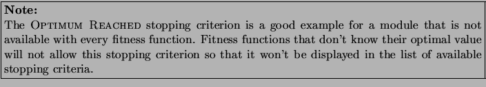
2.4.6 Step 6: Select Population Model and Initialization
Figure 2.10:
Selecting population model and initialization.
|
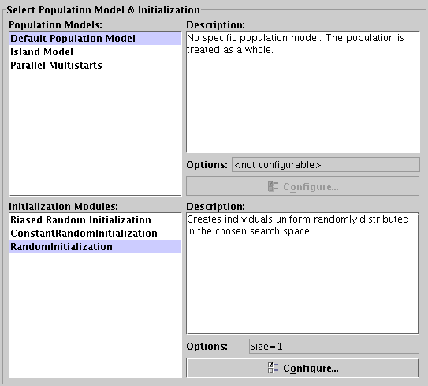 |
This step consists of two parts that both deal with the population of the algorithm and how this population is initialized. In the upper panel you select your population model. The population model is an optional choice and allows you to maintain subdivisions inside the population. The DEFAULT POPULATION MODEL is appropriate if you do not want to use subdivisions at all.
In the lower panel you select the initialization module which creates the initial population.
For now, leave the population model and the initialization module as it is to create a randomly chosen population of size 10.
With the completion of this step, you also completed the algorithm itself. What's missing is the collection and display of the data the algorithm produces. This is configured in the next step.
2.5.1 Step 7: Add Observers and Views
Figure 2.11:
Adding observers and views.
|
 |
Now that your algorithm is complete, you surely want to see what it does and how it performs. FrEAK uses two types of modules to accomplish your needs, observers and views. Observers collect and compute data that is produced by the algorithm and then displayed by one or several views on the screen or written to a file. There is (virtually) no limit of the number of observers and views you can use to process data.
The Current Observer Setup shows your current setup of selected observers and views in a tree view where observers are containers for views and views are leaves in the tree.
At first, the Current Observer Setup is empty, so you will most probably want to add an observer now. Select ALL INDIVIDUALS from the list of available observers and press the Add Observer button or double click on the list entry to add the observer to your current setup. This Observer just forwards the individuals to its views so they can display them in whatever way they want.
Since observers without any views do not make sense, you should add some views now, too. Select BOOLEAN HYPERCUBE from the list of available views and press Add View or double click on the list entry. The BOOLEAN HYPERCUBE displays BIT STRING individuals in a graphical visualization. Also add the view INDIVIDUAL TABLE to the observer. This view displays all individuals in a table.
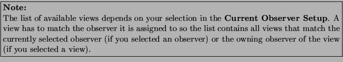
You can delete observers and views by selecting them and pressing the trash can button.
You should now have the setup as shown in Figure 2.11.
2.5.2 Step 8: Creating Batches of Runs
Figure 2.12:
Creating batches of runs.
|
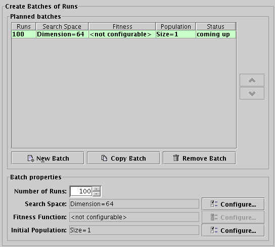 |
If you have read Section 2.1.2: WhatIsABatch, you should know by now what a batch is. Here, you can setup your batches. Figure 2.12 shows the first batch that is created automatically at the first time you enter this panel or hit the Finish button. As you can see, the table-row has a light green background and the last cell of the row (in the status-column) says "coming up". Rows can have 3 different colors which reflect the progress of the corresponding batch:
- green background / status: coming up
- The batch has not yet started. You can modify any setting of this batch.
- yellow background / status: running
- The batch is currently running. At least one run has already started. You cannot modify anything but the number of runs this batch has. You cannot decrease the number of runs below the number of already completed runs (plus the actual running one) though.
- red background / status: finished
- This batch has been finished completely. All runs have completed. Nothing can be changed here.
You can add new batches by either pressing New Batch or Copy Batch. The New Batch button creates a copy of the default batch that contains the configurations made in the first panels. The Copy Batch button simply copies the selected batch and appends it to the list.
You can remove batches with the Remove Batch button and change the order of batches with the arrow-buttons to the right. To modify the settings of a batch, first select it from the table by clicking on the corresponding row (the row will become bold). As soon as you select a batch, the Batch Properties panel at the bottom will show the configuration of it. You may then change the number of runs or the configurations for the phenotype search space, the fitness function, or the initial population. Changes are applied directly to the batch.
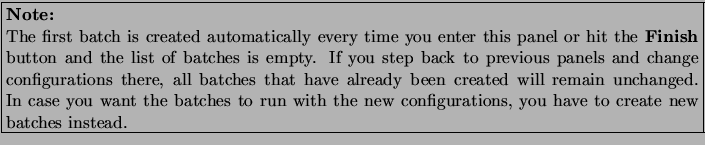
Try adding a few batches with different configurations and press Finish.
Well done. Your schedule is now complete. Now you might want to simulate (run) your schedule to see what it really does. This is covered in Chapter 3: chapter3.
2.6 Configuration of Modules
Whenever a module offers the option to be configured, the Property Dialog shown in Figure 2.13 (with varying contents of course) pops up:
Figure 2.13:
Property dialog of view BOOLEAN HYPERCUBE.
|
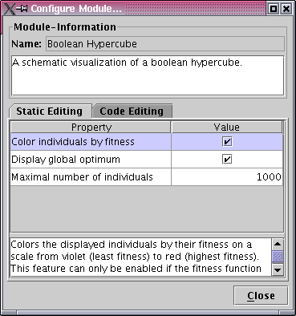 |
It displays some information about the module you are configuring, in particular the name and the description of the module as well as the properties the module allows to be configured.
Figure 2.13 shows the property dialog for a BOOLEAN HYPERCUBE. As you might have guessed, you can change the values displayed in the dialog to your needs. Numeric values can be edited, checkboxes can be set or unset, and so on.
2.6.2 Advanced Feature: Code Editing
When choosing the tab Code Editing, you will see a large text area where you can use Java code to adjust properties of the configured module. This is an advanced feature that is used to generate properties automatically for multiple batches as the entered code will be applied to every new batch.
Figure 2.14:
Code Editing of search space BIT STRING.
|
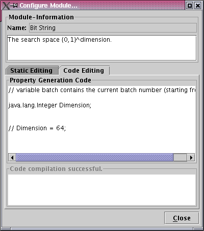 |
At the top of the panel, you see a Java comment telling you that the variable batch contains the current batch number. Below, you see definitions for the variables representing the properties within the module. Note that the variable declarations may differ from their names displayed in Static Editing.
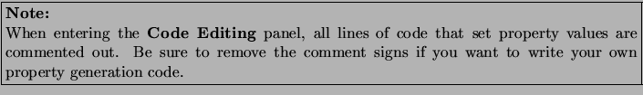
At the bottom of the panel, you see another text field informing you about compilation errors. If you finish editing code and hit the Close button, FrEAK tries to checks whether the generated code matches the corresponding property types. If you assigned incompatible property types, e.g., by assigning a String value to an integer, FrEAK might displays an error message to inform you of this problem.
An example for using Code Editing follows. To generate batches with the search space BIT STRING where the dimension grows in powers of two, you can enter the following code snippet:
// variable batch contains the current batch number (starting from 0)
java.lang.Integer Dimension;
Dimension = Math.pow(2, batch);
The variable batch is used to refer to the index of the batch. If you then close the dialog and create new batches, the 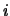-th batch in the list of batches (starting with 0) will now have a search space dimension of 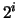.
2.6.3 Configuration of Event Sources
Some modules offer the possibility to be registered as event listener for certain events. An example for such a module is an observer that computes data from a specified set of individuals. This observer has to be notified when new individuals are available by an event. In fact, most observers work that way. So where does this event come from? Which other module is the event source for this event?
Figure 2.15:
Property dialog of observer ALL INDIVIDUALS.
|
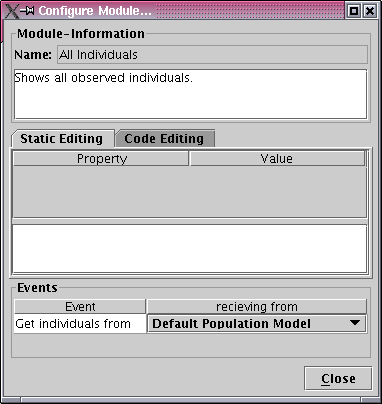 |
Modules that can be registered as event listeners have a Property Dialog as shown in Figure 2.15. (Here, the Property Dialog of the ALL INDIVIDUALS observer is shown.) You will notice a table of events each displayed with a name and an event source where the module receives this event from. The event source may or may not yet have been set to a valid source (in fact most, if not all, modules will be assigned to meaningful default event sources), but you can change the event source at any time by selecting an item from the drop down box of the event.
Some events allow only one event source (mainly the SCHEDULE itself), where other events even allow outports of operators of the graph to be selected as event source. See Figure 2.16 for an example.
Figure 2.16:
Possible event sources for the observer ALL INDIVIDUALS.
|
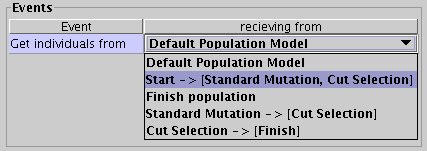 |
For more information about operators and outports, see Section 4.1: sec:op-graph-concept.
Of course there are modules that have both properties and event sources to be configured. An example for these modules are the Parameter Controllers described in Section 4.3: sec:param-control.
If you are done with configuring the module, click on OK to return to the Schedule Editor.